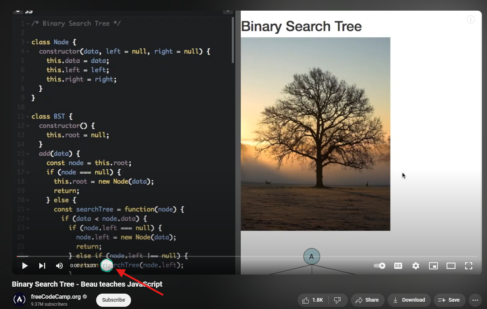
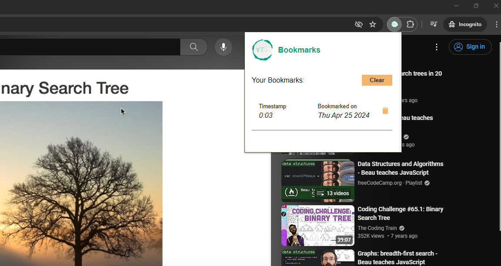

A simple Youtube timestamp bookmarker.
How to use?
-
Open your favorite Youtube video.
-
As soon as video is loaded, you should see the bookmark icon near the timestamp.

Bookmark icon shown right next to timestamp
-
Clicking the bookmark icon should bookmark the video's current timestamp.
-
To view you bookmarks for current video. Click on the extension icon.

Click bookmark extension shows current video's bookmarks
-
To resume your video from any of the available bookmarks, simply click on it.